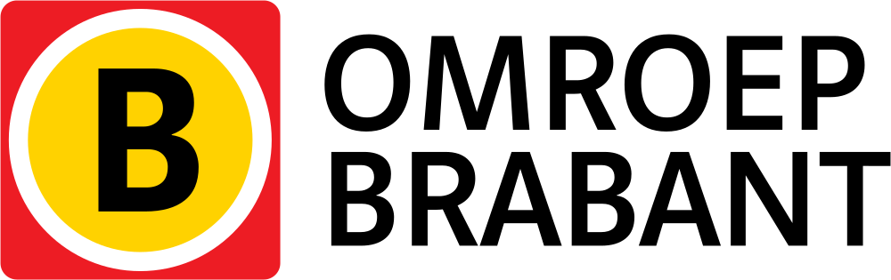

Diverse projecten

Omroep Brabant
Met Usevine heb ik verschillende usability-onderzoeken gedaan voor Omroep Brabant. Naast expert reviews op basis van onze eigen expertise, voerden we tests uit met een testpanel. Op basis van deze onderzoeken en onze aanbevelingen zijn belangrijke wijzigingen doorgevoerd in het (interactie)ontwerp van Omroepbrabant.nl.
Keukenhof
In opdracht van Fabrique heb ik een aantal responsive templates gemaakt voor de nieuwe site van de Keukenhof.

P1
In samenwerking met creatief collectief Goesting, verzorgde ik de frontend voor parkeerbedrijf P1. De nadruk in dit project lag op cross-browser compatibility.